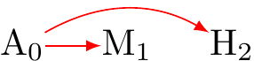

Goals
By the end of this seminar you will be able to:
- Understand the special problems that cultural research presents for measurement.
- Understand the deeper, and prior concept of confounding.
Key Concepts
- Measurement
- Validity
- A confounder
Where Does Psychology Start?
Psychology starts with a question about how people think or behave.
Examples of Psychological Questions?
How does early childhood experience affect personality and behaviour?
What are the effects of social media on self-esteem?
Why do some people believe in a God or gods and others do not?
Why are some people motivated to sacrifice for others?
Does marriage make people happy?
Example of Psychological Questions in Cross-Cultural Psychology
How do early childhood experiences differ across cultures, and how do these differences impact personality and behavior development?
Are there cultural differences in the way social media use affects self-esteem and body image?
How do cultural and religious beliefs shape individual attitudes towards the concept of God or gods?
What are the cultural and individual factors that motivate people to engage in acts of altruism or sacrifice for others, and how do these factors vary across cultures?
Are there cultural differences in the factors that contribute to marital satisfaction and happiness, and how do cultural expectations and values surrounding marriage play a role?
How might Psychological Scientists answer whether marriage makes people happy?
Wrong Answers Only
“Ask my married parents if they are happy.”
“Consult a palm reader.”
Assert: “Yes marriage always makes people happy”; “No marriage can’t possibly make anyone happy”
Intuit: “It depends on the gender of the individual. Men are always happier in marriage, while women are never happier.”
Intuition: “It depends on the cultural background of the individuals. Couples from Western cultures are always happier in marriage, while couples from Eastern cultures are never happier.”
Conduct a literature review of previous research on the association between marriage and happiness, including cross-cultural studies that compare different cultural attitudes and practices regarding marriage and their relationship to happiness.
Conduct a survey of a large and diverse sample of individuals to assess their happiness levels, as well as their marital status assess the relationship.
Conduct a Literature Review
What would this tell us?
- what other researchers have found.
What would this not tell us?
- what other researchers have not found.
- what other researchers got wrong.
Conduct a Survey with a Large and Diverse Sample of Individuals
- Where to begin?
Measurement
Definitions:
- “Measurement is the numerical quantifcation of the attributes of an object or event, which can be used to compare with other objects or events” [Conventional]
- “Measurement is the assignment of numerals to objects or events according to rules.” [Psychological]
- “Measurement is the process of experimentally obtaining one or more quantity values that can reasonably be attributed to a quantity.” [Metrological] from [@briggs2021]
“On a scale of 1-7, how happy are you?”
How might this go wrong?
- Ambiguity: Respondents may interpret “happiness” in different ways. -e.g. Some people may equate happiness with a momentary positive emotion -e.g. Others may think of happiness as a long-term state of contentment.
- Social Desirability Bias: Respondents may want to tell you what they think you want to hear. Others might want to frustrate you.
- Mood: the context in which the question is asked and the respondent’s current mood might affect the answer (reliability)
- Limited range of scale
- What do the endpoints mean?
- Cultural Differences:
- in meanings
- in constructs themselves
In Survey Research
Construct: e.g. Happiness - a subjective experience of positive emotions, such as joy, contentment, and satisfaction with life/
Item: A question or statement used to measure an aspect of happiness. Example: “I feel content with my life.”
Scale: A collection of items designed to measure a construct. Example: a happiness scale might consist of items rated on a Likert-type scale, with an overall score reflecting the level of happiness being measured. Example:
- “In general, how happy do you feel?” (rated on a scale from 1 - not at all happy to 5 - extremely happy)
- “How often do you feel positive emotions, such as joy or contentment?” (rated on a scale from 1 - very rarely or never to 5 - very often or always)
- “How satisfied are you with your life as a whole?” (rated on a scale from 1 - very dissatisfied to 5 - very satisfied)
Concept of Validity in Psychometric Research
- Content Validity: The degree an instrument measures what it is intended to measure (the “construct”).
- Construct Validity: Whether the construct assumed to measure is accurately defined and operationalised.
- Criterion Validity: Whether an instrument accurately predicts performance.
- Face Validity: whether an instrument measure what it is intended to measure, as assessed by experts.
- Ecological Validity: whether an instrument accurately reflects real-world situations and behavior [@bandalos2018]
Metric equivalence: Factor loadings are similar across groups. Configural equivalence: The factor structure is the same across groups in a multi-group confirmatory factor analysis. Scalar equivalence: Values/Means are also equivalent across groups.
What else might go wrong?
Suppose we are confident in measurement, administer survey, and find an relationship.
Does marriage cause happiness cross culturally?
What might go wrong?
Happiness might cause marriage
What else might go wrong?
Age might a common cause of both marriage and happiness

Many psychologists will simply “control for” income, but what if happiness and marriage cause income?
- Simulate data in which happiness and marriage cause income
- Controlling for income makes it look as though happiness and marriage are negatively related.
- But we simulated data with no relationship!
- This is called ‘collider bias’, we will consider how it works in the upcoming weeks.
- Meantime, even if we measure people without error, cross-cultural studies might select people with different incomes, leading to bias even in the absence of measurement error bias (and even if we do not control for income!)
## simulate data
# reproducability
set.seed(123)
sim_fun_B <- function() {
n <- 10000
H <- rnorm(n, 1) # simulates Happiness,
M <- rnorm(n, 1) # simulates Marriage, nothing to do with happiness
I <- rnorm(n, .2 * H + .5 * M) # simulate marriage as a function of age + happiness
# simulate dataframe from function
simdat_B <- data.frame(
H = H,
I = I,
M = M
)
# model in which marriage "predicts" happiness controlling for age
sim_B <- lm(H ~ M + I, data = simdat_B)
sim_B # returns output
}
# replicate 100 times
r_lm_B <- NA
r_lm_B <- replicate(100, sim_fun_B(), simplify = FALSE)
# print model results: marriage looks negatively related to happiness!
parameters::pool_parameters(r_lm_B)# Fixed Effects
Parameter | Coefficient | SE | 95% CI | Statistic | df | p
-------------------------------------------------------------------------------
(Intercept) | 0.96 | 0.02 | [ 0.92, 1.00] | 46.96 | 322.51 | < .001
M | -0.10 | 0.02 | [-0.13, -0.07] | -6.11 | 324.10 | < .001
I | 0.19 | 0.01 | [ 0.17, 0.22] | 13.71 | 320.53 | < .001The problem is confounding: what can we do about it?
- Weeks 2-4: Causal Diagrams
Our Approach:
External Validity
Definition: the extent to which the findings of a study can be generalised to other situations, people, settings, and time periods.
Importance: we want to know if our findings carry beyond the people in our study
Challenges: how can we know?
Internal Validity
Definition: the degree to which a study can demonstrate that a causal relationship exists between the ‘independent’ and ‘dependent’ variables, free of confounding.
We will use the term ‘outcome’ and ‘treatment’ in place of independent and dependent. This is because causality occurs in time.
Importance: we cannot interpret the associations we recover if they do not have a causal interpretation.
Challenges: internal validity requires balance in the confounders that might afffect the treatement and outcome, and observational data do not give us ballance.
The Special Challenges in Cross-Cultural Research:
- The concept of measurement itself has causal underpinnings [@vanderweele2022].
- In cross-cultural research, we have stronger challengs from measurement validity, which, as we shall see, encompasses both external and internal validity.
- We consider measurment validity within classical framework of external and internal validity
- Ethical challenges, which science needs to consider.
- Foremost among these ethical challenges, I believe, is doing our best to get inference right!
The Hope
- There has been tremendous progress in the health and computer sciences in addressing problems of external and internal validity from a causal perspective
- You will be among the first to apply these methods to questions in cross-cultural psychology.
- In doing so, much of what has been confusing to you about psychological research design, data-analysis, ultimately scientific inference will be clearer.
What have we learned?
- Measurement: attaching magnitudes to features of the world.
- Validity: obtaining accurate scientific inference: a complex set of interrelated problems.
- Confounding; association in data is spurious
References
For an account of the history of measurement in psychological research, see: [@briggs2021]
For an account of key concepts and current debates in psychometrics, see: [@bandalos2018]
For an accessible introduction to causal inference and its history see: [@pearl2018]